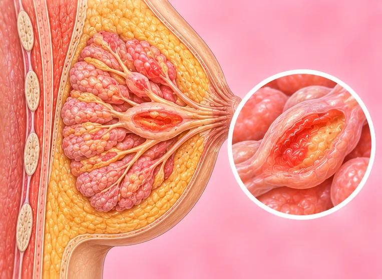

Kelenjar limfa payudara membengkak
Kelenjar kecil berbentuk kacang berhampiran payudara atau ketiak yang membesar
Apa itu
Kelenjar limfa ialah kelenjar kecil yang membantu melawan kuman. Yang berhampiran payudara atau ketiak boleh membengkak, selalunya kerana jangkitan, tetapi ketulan perlu diperiksa doktor.
- Payudara dan ketiak
- Boleh berlaku kepada sesiapa
- Ketulan kecil atau rasa sakit
- Jumpa doktor
- Doktor keluarga, klinik payudara atau pakar bedah payudara
- Biasa pada
- Sesiapa sahaja; selalunya selepas selsema, jangkitan kulit atau luka kecil
- Berjangkit
- Tidak, tetapi jangkitan di sebaliknya mungkin boleh merebak
- Perjalanan
- Selalunya mengecil dalam beberapa minggu jika akibat jangkitan; ketulan yang kekal perlu diperiksa
Tanda biasa
Ketulan di ketiakKetulan aksila 
DemamDemam
Tanda-tanda lain
- Ketulan mungkin terasa sakit apabila disentuh
- Kulit payudara merah atau panas jika ada jangkitan
Mengapa ia berlaku

Kesan sampingan sesetengah ubatKesan buruk ubat
Punca lain
- Jangkitan seperti selsema, jangkitan kulit atau payudara
- Luka kecil pada lengan, tangan atau dada
- Kurang kerap, penyakit jangka panjang atau kanser, sebab itu pemeriksaan diperlukan
Jumpa doktor dahulu jika
- Ketulan keras yang tidak bergerak dan tidak sakit
- Ketulan yang kekal atau membesar lebih daripada beberapa minggu
- Ketulan baru pada payudara, lelehan puting, kulit berlekuk atau bentuk payudara berubah
- Berat badan turun, berpeluh malam atau demam berpanjangan tanpa sebab
- Demam dengan payudara merah, panas dan sakit
Jika mana-mana berkenaan, sila jumpa doktor sebelum sesi.
Halaman ini ialah maklumat am. Sila terus mengambil ubat biasa anda dan terus berjumpa doktor.
Teruskan mengambil ubat biasa anda dan terus berjumpa doktor. Sesi kami ialah sokongan lembut dan tidak menggantikan rawatan perubatan.
Menjaga diri

Jangan picit atau korekJangan sentuh Catat simptom andaDiari simptom
Lebih banyak cara menjaga diri
- Berehat dan minum air yang cukup jika rasa tidak sihat
- Jumpa doktor jika ia tidak mengecil dalam beberapa minggu
- Pergi untuk saringan payudara seperti yang dinasihatkan doktor
Beritahu ahli terapi anda
- Kanser atau rawatan kanser
- Demam atau jangkitan aktif
- Kehamilan
Ahli terapi anda akan menyemaknya bersama anda sebelum bermula.
Soalan dan jawapan
Apakah Kelenjar limfa payudara membengkak?
Kelenjar kecil berbentuk kacang berhampiran payudara atau ketiak yang membesar. Kelenjar limfa ialah kelenjar kecil yang membantu melawan kuman. Yang berhampiran payudara atau ketiak boleh membengkak, selalunya kerana jangkitan, tetapi ketulan perlu diperiksa doktor.
Apakah tanda biasa Kelenjar limfa payudara membengkak?
Ketulan di ketiak · Demam
Mengapa Kelenjar limfa payudara membengkak berlaku?
Kesan sampingan sesetengah ubat
Bagaimana menjaga diri dengan Kelenjar limfa payudara membengkak?
Jangan picit atau korek · Catat simptom anda
Bolehkah sesi AI Body Master membantu Kelenjar limfa payudara membengkak?
Sesi ialah sokongan meridian tanpa jarum yang lembut untuk kesejahteraan anda. Ia tidak merawat atau menyembuhkan Kelenjar limfa payudara membengkak dan tidak menggantikan ubat atau doktor anda. Beritahu ahli terapi anda sebelum sesi bermula.
Keadaan berkaitan
Rujukan: General information based on public health sources such as Mayo Clinic, NHS, Cleveland Clinic and NCBI StatPearls.
Halaman dikemas kini: 2026-11-01